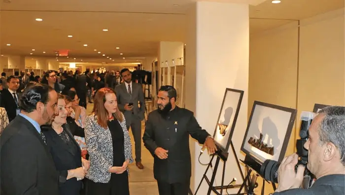

United Nations, New York, USA 2019

April 15, 2019
The exhibition “Tolerance, Understanding, Coexistence: Oman’s Message of Islam”, premiered at the United Nations Headquarters, New York on April 15, 2019.
The exhibition was held under the auspices of HE María Fernanda Espinosa Garcés, the President of the United Nations General Assembly, and Chef de Cabinet Maria Luiza Viotti the Chef de Cabinet to UN Secretary General António Guterres. With the presence of HE Ambassador Khalifa bin Ali Al-Harthy, Permanent Representative of the Sultanate of Oman to the United Nations, and Dr. Mohamed Said Al-Mamari, advisor at Ministry of Endowments and Religious Affairs, the Supervisor of the Exhibition.
The exhibition in the UN was the result of cooperation between the Ministry of Endowments and Religious Affairs-Oman and the Permanent Mission of the Sultanate of Oman to the United Nations.
The opening ceremony was held in the presence of a number of eminent personalities at the UN. Those attending included a number of ambassadors, heads of religious centres, academics and religious communities from New York.
A promotion stand for the initiative was located within the exhibition space and visitors get the option of being photographed with an ➤ #ACTFORTOLERANCE board.
Visitors also received T-shirts with the imprint #ACTFORTOLERANCE ➤, and postcards with text messages encouraging mutual understanding and peaceful coexistence, such as: Safety lies in the middle course, Speak kindly to mankind! Wish people what you wish for yourself! The best people are those who are most helpful to others. We have made you races and tribes that you may become mutually acquainted. Is there any reward for good other than good? Return the trust to those who entrusted you! Do not betray even the one who betrayed you! Cooperate in righteousness and piety! Treat people with good manners!
The guests of the exhibition expressed their happiness and respect at what they saw of exhibits calling for common human values, and the importance of the exhibition in the United Nations Headquarter.
“It is especially timely that this exhibition has now arrived at the United Nations Headquarters in New York. Although it is rooted in Omani traditions, including tolerance, this exhibition has a message for the world, because hatred is on the rise, from last month’s massacre at a mosque in New Zealand, to last October’s killings at a synagogue in Pittsburgh, to attacks on churches.”
“This exhibition is a contribution to promoting mutual understanding and peaceful coexistence. This exhibition is about better knowing each other – and seeing in each one of us our shared humanity. We thank the government and people of Oman for their support.”
“Let us all focus on what unites us, and work together to defend equality and dignity for everyone, everywhere.”
HE Under-Secretary-General Maria Luiza Viotti,
UN Chef de Cabinet
“The aim of this initiative is to promote international peaceful coexistence, and inter-religious dialogue. Personally, I am glad to have it today at the United Nations, the place which embodies the strivings of the peoples of the world to have mutual understanding and peaceful coexistence.”
“Throughout history and especially in the last few decades, we have witnessed many acts of hate and terrorism, from 9/11 here in New York to the recent massacre in New Zealand, which were all committed in the name of religion or just for being different. These examples highlight the need for all of us to do more to live and let live together in harmony and respect. This exhibition supports that noble goal.”
HE Ambassador Khalifa bin Ali Al-Harthy,
Permanent Representative of the Sultanate of Oman to the United Nations
“We in India are well aware of Oman#s tradition of tolerance, which is a bridge of understanding between different cultures. We in india also greatly respect the Oman tradition of moderation.”
HE Ambassador Syed Akbaruddin,
Permanent Representative of India to the United Nations
“I am happy to be with you in this important exhibition at this important time. This message is the message of Islam to the world. This message expresses the real essence of the Islam.”
“Therefore, I believe that this exhibition at this time is also consistent with the general feeling that we must all stand in the face of hatred and in the face of distortion of religions and in the face of the false image of the Islam, which does not reflect the truth of this tolerant religion.”
HE Ambassador Mohamed Idris,
Permanent Representative of Egypt to the United Nations
“I am happy to be present at this important ceremony on the role of Islam in finding compromises and in achieving international peace and security, one of the main purposes of the United Nations. The Sultanate of Oman is distinguished by its moderate and impartial positions and is therefore highly appreciated by the Arab Group. It is also mandated to mediate disputes and disputes between our brothers.”
“We are proud of the role played by His Majesty Sultan Qaboos bin Said and the role played by the Ministry of Foreign Affairs and the Permanent Mission here in New York both in terms of the dissemination of moderate and far-reaching extremist thought, and in terms of supporting international efforts to find peaceful solutions to the existing global problems, especially the Arab problems, which we are seeing increasingly increase in our Arab world, and need a lot of effort.”
“We wish the Sultanate of Oman and its wise leadership success in its ongoing initiatives in this direction.”
HE Ambassador Majid Abdel-Fattah Abdel Aziz,
Permanent Observer of the League of Arab States to the United Nations
Please visit our Virtual Global Exhibition in your preferred language